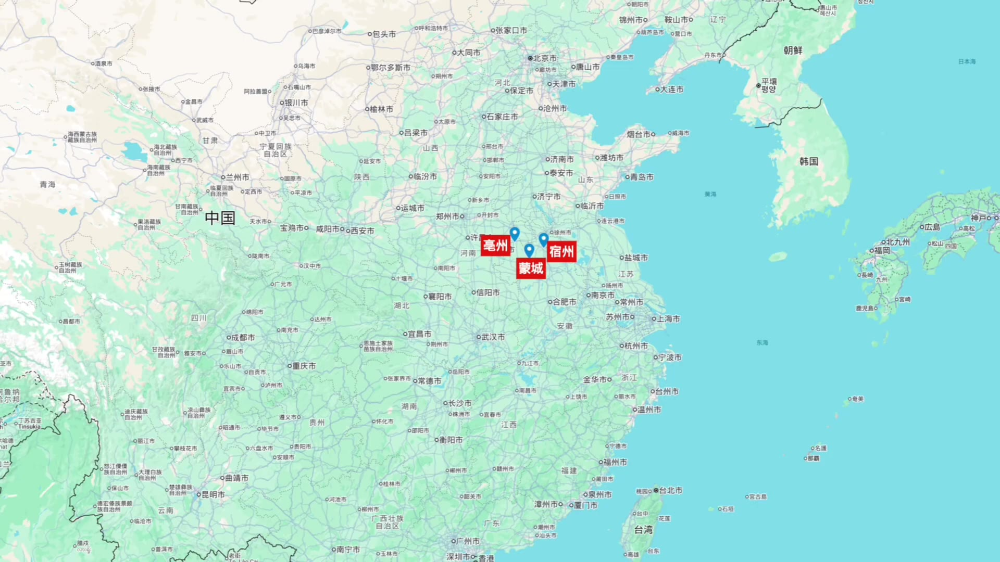
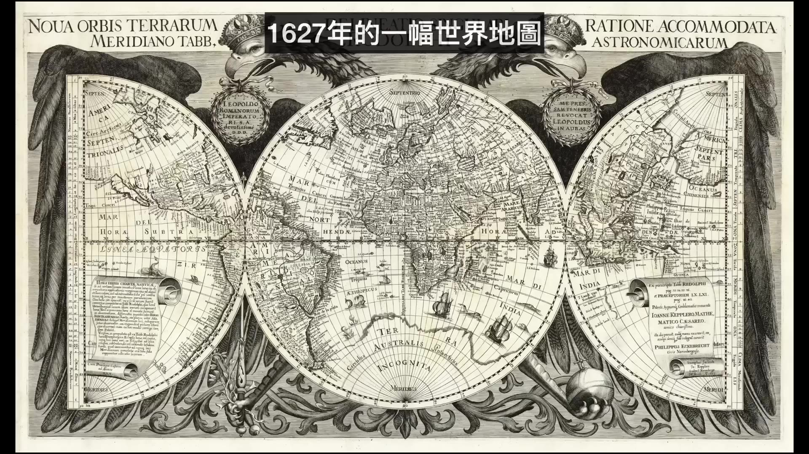

史
近代史文庫
HISTORY KB — 影片知識庫 · 逐字稿與地圖
地圖總覽 →
北洋時代合集
46 節 · 19 幅地圖 · 49 幀史照
庚子拳亂（合集）
40 節 · 32 幅地圖 · 261 幀史照
甲午戰爭（合集）
65 節 · 96 幅地圖 · 157 幀史照

捻軍（合集）
25 節 · 42 幅地圖 · 58 幀史照

鴉片戰爭（合集）
37 節 · 30 幅地圖 · 115 幀史照
太平天國（合集）
89 節 · 146 幅地圖 · 213 幀史照
戊戌變法（合集）
25 節 · 0 幅地圖 · 81 幀史照
湘軍崛起（合集）
25 節 · 12 幅地圖 · 12 幀史照
袁世凱（合集）
32 節 · 19 幅地圖 · 35 幀史照
左宗棠西征之陝甘回亂
25 節 · 77 幅地圖 · 507 幀史照
左宗棠西征之收復新疆
39 節 · 104 幅地圖 · 132 幀史照